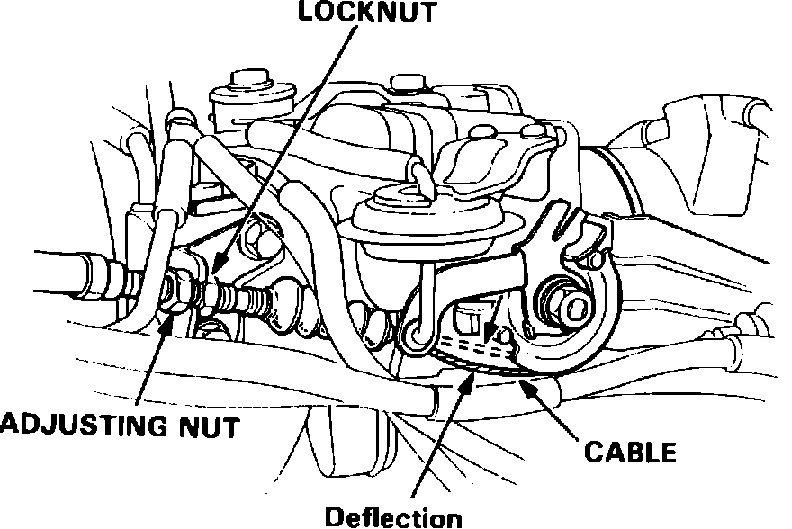
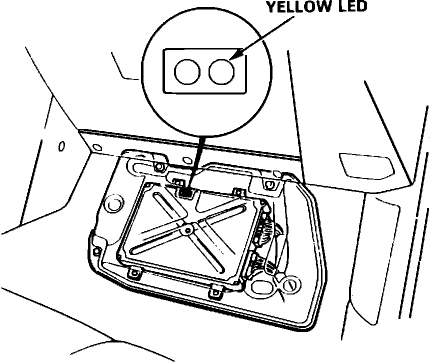
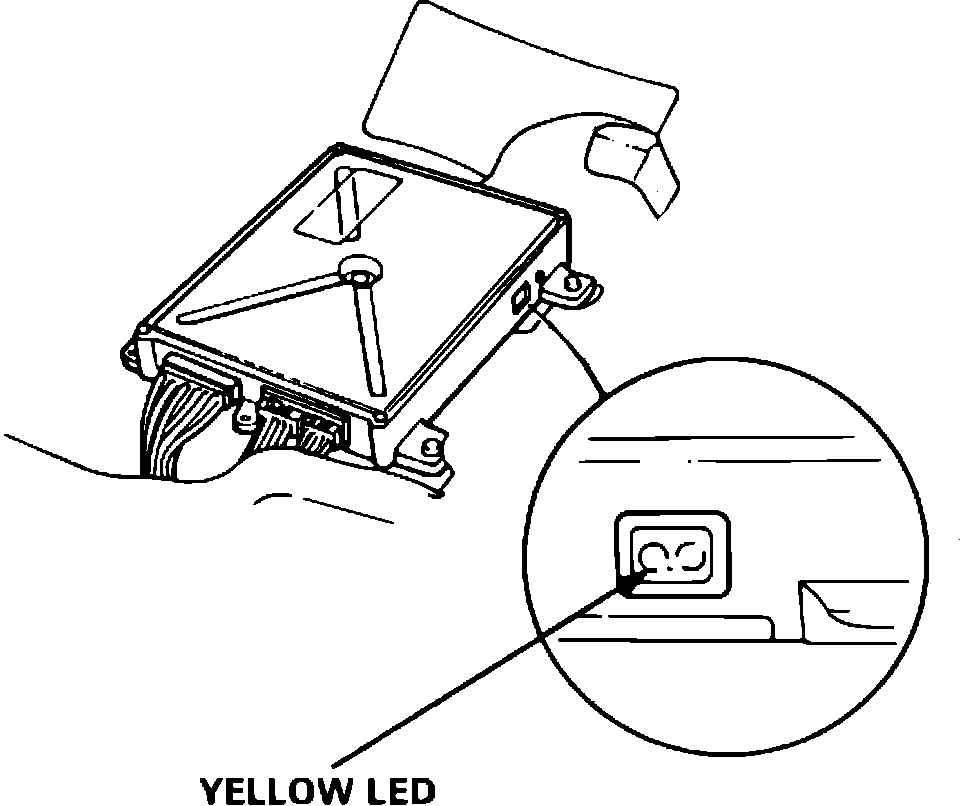
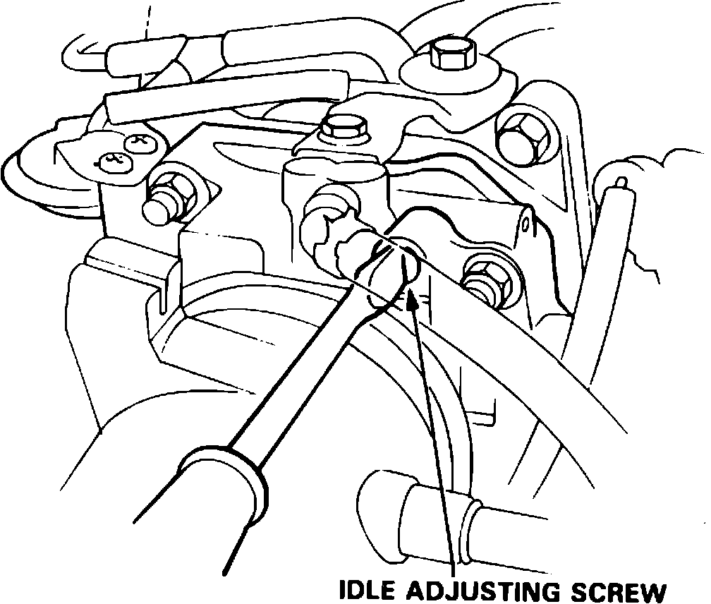

Idle Speed Setting
1. Start the engine and warm it to operating temperature (the cooling fan comes ON).2. Connect a tachometer.
3. Turn off the engine. Check that the throttle cable operates smoothly with no binding or sticking.
Fig. 6 Throttle Cable Adjuster:

4. Check cable free play at the throttle linkage. The cable deflection should be:
0.39-0.47 in (10-12 mm)
5. If free play is not within specifications, loosen the lock nut and turn the adjusting nut, until the freeplay is as specified.
6. Tighten the locknut and recheck the cable freeplay and if necessary readjust.
7. With the cable properly adjusted, check the throttle valve to be sure it opens fully when you push the accelerator to the floor. Also check that the throttle valve returns to the idle position whenever you release the accelerator.
8. Restart the engine. Check the idle speed with no load on the engine (transmission in neutral, headlamps, air conditioning, blower fan, rear window defogger, radiator cooling fan and brake lamps all OFF). Idle speed should be:
680+/-50 RPM in neutral or park
Fig. 7 ECU Lamps (Coupe):

Coupe
Fig. 8 ECU Lamps (Sedan):

Sedan
9. Check the yellow LED at the ECU
a. If the yellow LED is OFF do not adjust idle adjusting screw.
b. If the yellow LED is BLINKING turn idle adjusting screw 1/4 turn clockwise.
c. If the yellow LED is ON turn idle adjusting screw 1/4 turn counterclockwise.
NOTE: On a new engine (less than 310 miles or 500 km) the yellow LED may light even though the idle adjusting screw is properly set and no adjustment should be made.
Fig. 9 Idle Speed Adjusting Screw:

10. If the yellow LED does not go OFF after approximately 30 seconds rotate the idle adjusting screw 1/4 turn in the same direction, and repeat the operation until the yellow LED goes OFF.
11. Check the idle speed in the following conditions:
a. With the headlamps (HI) and the rear window defogger ON.
b. With the air conditioner compressor ON.
c. While turning the steering wheel.
d. With automatic transmission placed in any gear except neutral or park.
The engine idle speed should remain stable at 680+/-50 RPM.